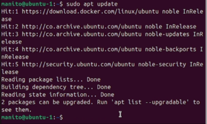
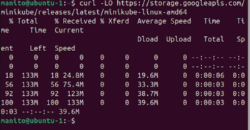
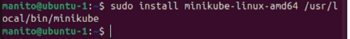
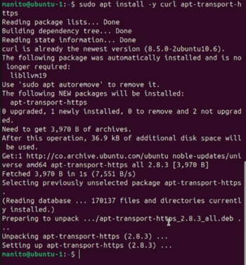
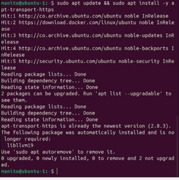
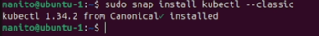
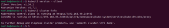
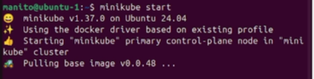
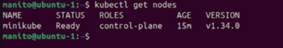

Actividad 6.1: Instalación de Minikube o K3s en Linux y kubectl
Se hizo la instalación completa de minikube en una distribución de Linux grafica
Paso1. Actualizar configuraciones
Actualizar las configuraciones con sudo apt update para evitar problemas con las instalaciones que haremos
Paso2. Descargar minikube
Descargamos el archivo binario de minikube para la distribución de Linux para posteriormente instalarlo
Paso3. Instalar minikube
instalar minikube para poder usarlo en cualquier carpeta, esto nos facilitara usar comandos posteriormente
Paso4. Actualizar configuraciones
Actualizar las configuraciones para evitar problemas probelas en futuras instalaciones
Paso5. Instalar herramientas
instalar herramientas necesarias para instalar diversos programas desde repositorios HTTPS
Paso6. Descargar clave GPG
Descargar clave: descargar la clave GPG de Google lo cual nos permite verificar
que los paquetes que descarguemos sean auténticos
Paso7. Actualizar configuraciones
: actualizamos nuevamente las configuraciones para evitar problemas en futuras instalaciones
Paso8. Instalar kubectl
Instalamos kubectl lo que nos permitirá manejar pods entre otras cosas
Paso9. Verificar Instalacion de kubectl
verificamos si se instalo kubectl con kubectl versión –client y kubectl cluster -info
Paso10. Verificar la instalacion de minikube
Verificamos que se instaló minikube correctamente con minikube start la siguiente imagen muestra el comando indicado
Paso11. Verificar inicio de minikube
verificamos si minikube inicio correctamente con kubectl get pods la siguiente imagen mostrara un ejemplo de esto
A continuación se anexa el link al video del punto 6.1: link